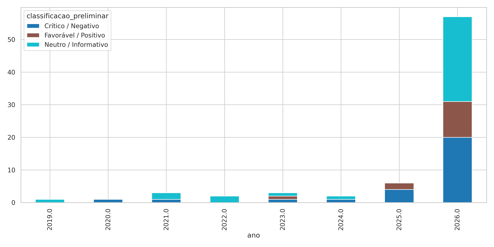

✨ Resumo Gerado por IA (Últimos 7 dias)
👍 Principais Opiniões Positivas
Os textos evidenciam a distribuição e disponibilidade contínua de vacinas contra raiva, Covid-19 e sarampo em diversas regiões do país. Destaca-se o forte avanço da imunização e conscientização sobre a Mpox para grupos prioritários em diferentes estados e capitais. Por fim, reforça-se a ampliação do acesso à saúde pública com a oferta gratuita de imunizantes e atendimento facilitado, inclusive em feriados.
⚠️ Principais Críticas e Preocupações
Os dados destacam o impacto do medo e da hesitância vacinal, que atrasam a imunização de grupos vulneráveis como prematuros em até 70% dos casos. Apontam alertas sobre o ressurgimento de doenças controladas, com discussões sobre o avanço do sarampo nas Américas e a perda de status de país livre da doença nos EUA. Evidenciam também gargalos na distribuição de doses e a necessidade contínua de superar barreiras vacinais para doenças como Covid-19 e Mpox.
Análise de Dados e Sentimentos



Destaques da Semana
Top 10 Mais Positivos
-
Score: 0.72 Notícia PortalLer na íntegra →
Vacina antirrábica na zona rural de Campo Grande dia 20 - Campo Grande News
Vacina antirrábica na zona rural de Campo Grande dia 20 - Campo Grande News
-
Score: 0.70 Notícia PortalLer na íntegra →
Postos de saúde de Marília abrem no feriado com vacinação e atendimento médico - G1
Postos de saúde de Marília abrem no feriado com vacinação e atendimento médico - G1
-
Score: 0.68 Notícia PortalLer na íntegra →
Enfermeiro explica como prevenir Mpox e importância da imunização - G1
Enfermeiro explica como prevenir Mpox e importância da imunização - G1
-
Score: 0.46 Notícia PortalLer na íntegra →
Rio Grande do Sul recebe 120 mil doses de vacina contra a Covid-19 - GAZ
Rio Grande do Sul recebe 120 mil doses de vacina contra a Covid-19 - GAZ
-
Score: 0.38 Notícia PortalLer na íntegra →
Belo Horizonte inicia vacinação contra a Mpox nesta quinta-feira (19) - CNN Brasil
Belo Horizonte inicia vacinação contra a Mpox nesta quinta-feira (19) - CNN Brasil
-
Score: 0.37 Notícia PortalLer na íntegra →
Vacina contra mpox está disponível para grupos prioritários no Piauí; veja quem pode receb...
Vacina contra mpox está disponível para grupos prioritários no Piauí; veja quem pode receber - G1
-
Score: 0.37 Notícia PortalLer na íntegra →
Com 200 vacinas, BH ampliará vacinação contra Mpox nesta quinta-feira para grupos prioritá...
Com 200 vacinas, BH ampliará vacinação contra Mpox nesta quinta-feira para grupos prioritários - G1
-
Score: 0.34 Notícia PortalLer na íntegra →
Casos de Mpox crescem 20% no Brasil; saiba se a vacina está disponível na rede particular ...
Casos de Mpox crescem 20% no Brasil; saiba se a vacina está disponível na rede particular - Valor Econômico
-
Score: 0.25 Notícia PortalLer na íntegra →
PBH inicia vacinação contra mpox para grupos prioritários e imunização será ampliada nesta...
PBH inicia vacinação contra mpox para grupos prioritários e imunização será ampliada nesta quinta-feira (19) - Prefeitura de Belo Horizonte
-
Score: 0.18 Notícia PortalLer na íntegra →
Vacina contra o sarampo continua disponível gratuitamente nas UBSs de Porto Velho - Diário...
Vacina contra o sarampo continua disponível gratuitamente nas UBSs de Porto Velho - Diário da Amazônia
Top 10 Mais Negativos
-
Score: -0.82 Notícia PortalLer na íntegra →
Equipes da prefeitura seguem com vacinação de cães e gatos contra raiva nos bairros até di...
Equipes da prefeitura seguem com vacinação de cães e gatos contra raiva nos bairros até dia 30 - Prefeitura de Manaus
-
Score: -0.80 Notícia PortalLer na íntegra →
Vacina experimental para leucemia reduz em 41% o risco de morte, diz estudo - Metrópoles
Vacina experimental para leucemia reduz em 41% o risco de morte, diz estudo - Metrópoles
-
Score: -0.61 Notícia PortalLer na íntegra →
Frágil demais para imunizar? Medo pode atrasar a imunização de prematuros em até 70% dos c...
Frágil demais para imunizar? Medo pode atrasar a imunização de prematuros em até 70% dos casos - PFARMA.com.br
-
Score: -0.53 Notícia PortalLer na íntegra →
Mpox: SP recebe doses de vacina; Saiba para quais cidades elas vão e quem pode tomá-las - ...
Mpox: SP recebe doses de vacina; Saiba para quais cidades elas vão e quem pode tomá-las - O GLOBO
-
Score: -0.49 Notícia PortalLer na íntegra →
EUA não é mais país livre do sarampo? Entenda situação atual e cronologia da doença no paí...
EUA não é mais país livre do sarampo? Entenda situação atual e cronologia da doença no país - Assine Abril
-
Score: -0.37 Notícia PortalLer na íntegra →
Covid-19: quem deve tomar a vacina? Quais sintomas? Tire suas dúvidas - agenciasp.sp.gov.b...
Covid-19: quem deve tomar a vacina? Quais sintomas? Tire suas dúvidas - agenciasp.sp.gov.br
-
Score: -0.15 Notícia PortalLer na íntegra →
Cuiabá reforça vacinação contra Covid-19 para grupos prioritários nas 72 unidades de saúde...
Cuiabá reforça vacinação contra Covid-19 para grupos prioritários nas 72 unidades de saúde - Prefeitura de Cuiabá
-
Score: -0.15 Notícia PortalLer na íntegra →
Covid-19: pesquisa mostra visão do brasileiro sobre vacina contra doença em alta no Brasil...
Covid-19: pesquisa mostra visão do brasileiro sobre vacina contra doença em alta no Brasil - VEJA
-
Score: -0.15 Notícia PortalLer na íntegra →
Região receberá 12 doses da vacina contra mpox para imunização de grupos prioritários - ww...
Região receberá 12 doses da vacina contra mpox para imunização de grupos prioritários - www.imparcial.com.br
-
Score: -0.15 Notícia PortalLer na íntegra →
Três Rios mantém vacinação contra a Covid-19 para grupos prioritários - O Dia
Três Rios mantém vacinação contra a Covid-19 para grupos prioritários - O Dia